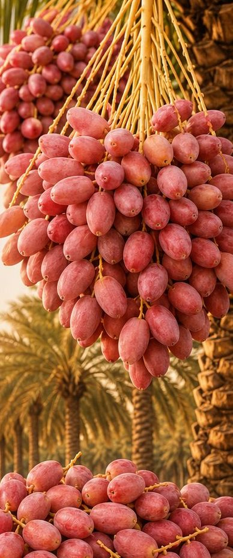
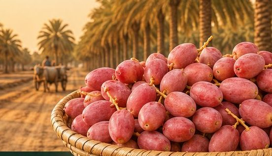
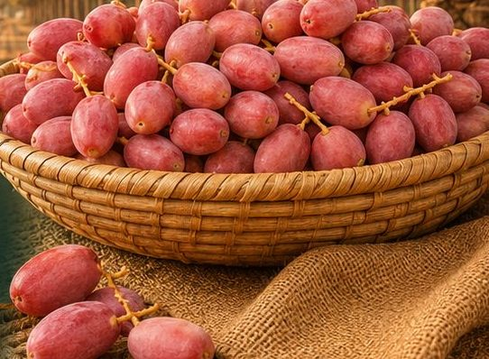
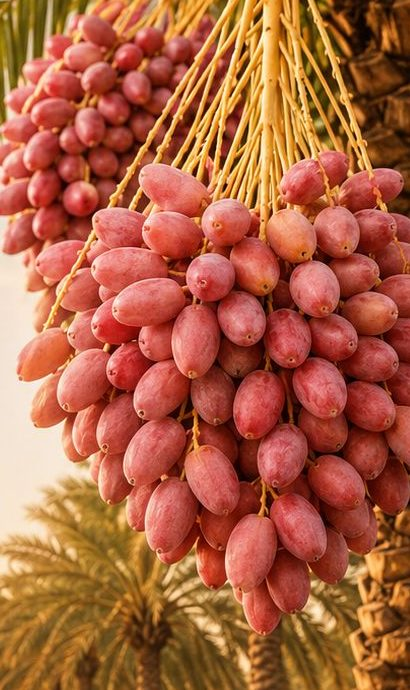

GI Tagged
500 g Pack
Perfect for first-timers and everyday snacking.
In Stock
GI Tagged - Direct from Kutch Farms
Experience the authentic taste of Gujarat with naturally sweet, farm-fresh GI Tagged Dates sourced directly from Kutch.
Why our dates
Every date is hand-selected at peak ripeness from GI-recognised Kutch farms - grown without chemicals and delivered fresh, exactly as nature intended.
Certified Geographical Indication provenance - genuine Kutch dates, verified by origin.
Harvested and packed at peak ripeness so freshness reaches your home intact.
Rich, caramel-like sweetness that is entirely natural - no added sugars.
Plump, uniform and carefully graded for a consistently premium eating experience.
A wholesome source of dietary fiber to support everyday digestive wellness.
Naturally packed with potassium, magnesium and iron for daily nourishment.
100% natural - free from artificial colours, flavours and preservatives.
Selected by hand on family farms across the arid, date-rich Kutch belt.
About the GI Tag
A Geographical Indication (GI) is an official mark of origin - it certifies that a product genuinely comes from a specific place and carries the qualities unique to it.

From the farm
In the sun-soaked, arid landscape of Kutch, date palms have been tended for generations. We partner directly with these growers - so every date carries their care and know-how.
Single-region Kutch date palms with genuine GI provenance.
Low-water, low-input farming suited to the desert climate.
Picked at peak ripeness and sorted by hand, never rushed.
Packed quickly to lock in natural moisture and flavour.
Health benefits
Dates are one of nature's most nourishing foods - a delicious way to fuel your day.
Naturally occurring sugars deliver a quick, clean energy lift.
Dietary fiber that supports healthy, comfortable digestion.
Helps maintain healthy fluid balance and muscle function.
Keeps you fuller for longer and supports gut wellness.
A plant-based source of iron for everyday vitality.
Naturally rich in antioxidants that help protect your cells.
A wholesome, low-fat snack as part of a balanced diet.
The perfect guilt-free treat for any time of day.
Choose your pack
Available in four convenient sizes. Tap to order instantly on WhatsApp, or send us an enquiry.
Perfect for first-timers and everyday snacking.
In Stock

Why MODERN HARVEST
Direct relationships with GI-recognised Kutch date farms.
Every batch is checked and hand-graded before it reaches you.
Packed and dispatched quickly to preserve natural freshness.
Simple, safe payment options confirmed over WhatsApp.
Prompt dispatch across the region so freshness never waits.
A real person on WhatsApp, ready to help before and after you order.
Customer reviews
Incredibly fresh and naturally sweet - you can taste the difference. The gift pack was beautifully presented.
Genuine Kutch dates with real GI provenance. Soft, plump and clearly chemical-free. Ordering again.
Ordered on WhatsApp and it could not have been easier. Fresh delivery and wonderful taste.
FAQ
A Geographical Indication (GI) tag is an official mark that certifies a product originates from a specific region and carries qualities unique to that place. Kutch dates carry a GI tag, guaranteeing authentic origin and characteristic quality.
Keep them in an airtight container. At room temperature they stay fresh for several weeks; refrigerated, they keep for a few months while retaining their natural softness and sweetness.
As a fresh, chemical-free product, our dates are best enjoyed within a few weeks at room temperature or a few months when refrigerated in an airtight container.
No. Our Fresh Kutch dates are 100% natural with no artificial preservatives, colours or chemicals.
They are grown and hand-harvested on GI-recognised date farms in the Kutch region of Gujarat, India, and delivered fresh.
Now available at MODERN HARVEST
Naturally sweet, farm-fresh and GI Tagged. Order in minutes on WhatsApp, or send us an enquiry.